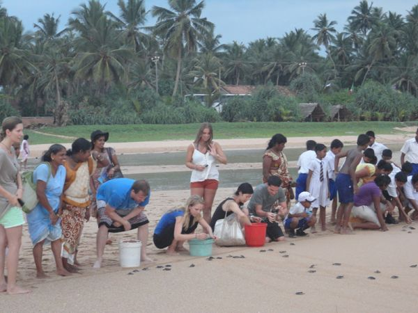
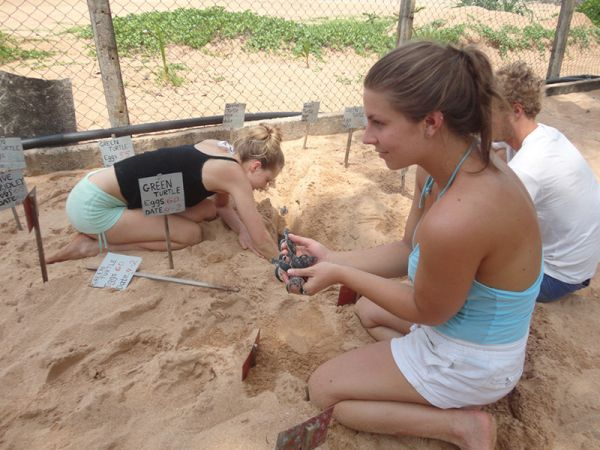
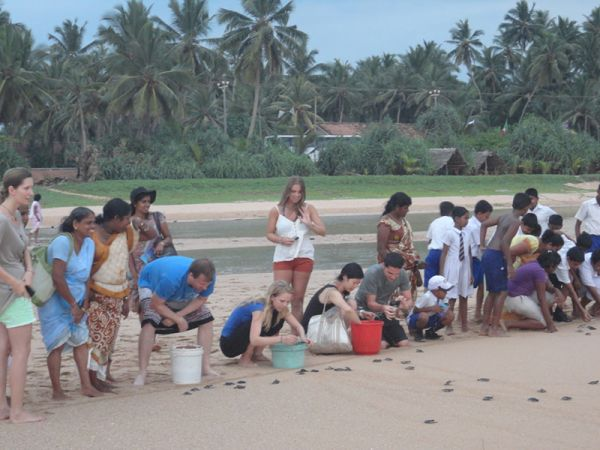
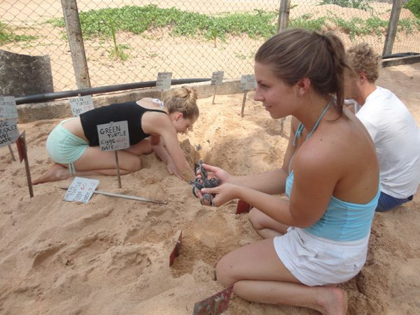
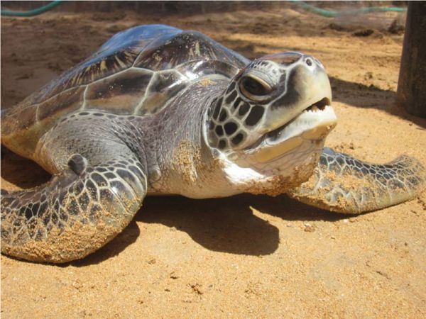
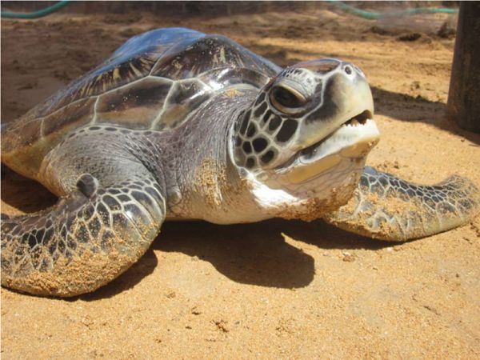

When you let Invite to Paradise plan your holiday to Sri Lanka, it just may be possible for you to visit a Sea Turtle Hatchery on the beach, where you can experience the wonder of the these majestic and ancient creatures. The conservation efforts of these hatcheries, sometimes locally referred to as a farm, are important to the species as they rescue the eggs, that are similar to ping-pong balls, from the beach where they are vulnerable to poachers and predators. They then keep the eggs in protected sand in the hatchery so that the eggs can hatch and then they release many back into the ocean. It's nice to see what they do on the cusp of the gorgeous Indian Ocean and it can be a lovely spot for a stroll along the beach to take in the tropical atmosphere. The baby sea turtles are undeniably very cute and for many of our customers it turns out to be the memory of a lifetime when they get to hold them! This is a unique experience and adds a flourish to the trip. We are usually able to include a visit for you to a Sea Turtle Hatchery on the beach if you are visiting Sri Lanka's south or west coast, often whilst you're staying near to Galle. If you're in the area for a few days then your driver will ask you at the time which day you would like to do it on, then you can choose to suit your energy levels. The honeymoon couples from the UK that we send here absolutely love it as you get to see lots of turtles and hold the baby ones! There's even a chance that you could release a baby sea turtle in to the ocean! This part isn't guaranteed as it's dependent on the conservation efforts at the time of your visit. The visit is a lovely little experience as you will get to really understand the wonder of these creatures. Get up close and personal with the tiny sea turtles of Sri Lanka, whilst learning about why they are endangered and what is being done to help protect them. Sri Lanka has five species of egg laying sea turtles that lay eggs at different points along Sri Lanka's stunning coastline.
These are:
-Green Turtle (the most common)
-Olive Ridley Turtle
-Hawksbill Turtle
-Leatherback Turtle
-Loggerhead Turtle
Their existence is reported to stretch back to the time of dinosaurs around 110 million years ago, making them on the oldest creatures on the planet. They can live up to the ripe old age of around 80 years and contrary to popular myth sea turtles cannot tuck their heads into their shells. It's said that they can see better under water than on land. They are categorized as a reptiles due to being cold blooded, having scaly skin and a three chambered heart. Almost all sea turtle species are listed as Endangered Species, so it is important to us that you gather an understanding from the hatchery about the sea turtles and the hatchery will explain to you the story behind the sea turtle in Sri Lanka and the efforts practiced to protect them. There are different hatcheries along the coast, we will send you to one of the most reputable ones. They exist to protect the species and to conserve them, essentially by protecting them from anything that fancies eating them such as birds, fish, people and anything else that has an appetite. The hatchery rescues eggs from poachers (who often see the eggs as a food source) they also rescue turtles from nets so some have injuries that require rehabilitation. Some sea turtle hatcheries told us that they have released over 500,000 sea turtles back into the Indian Ocean.
 



 
